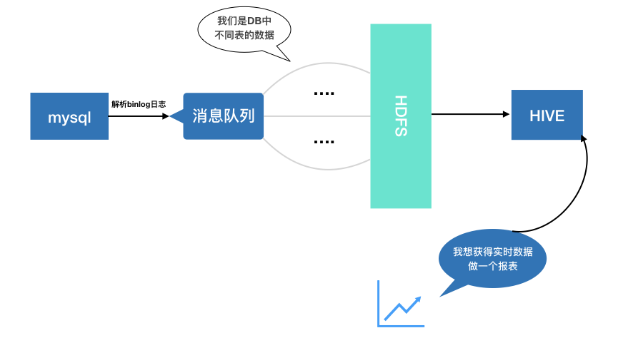
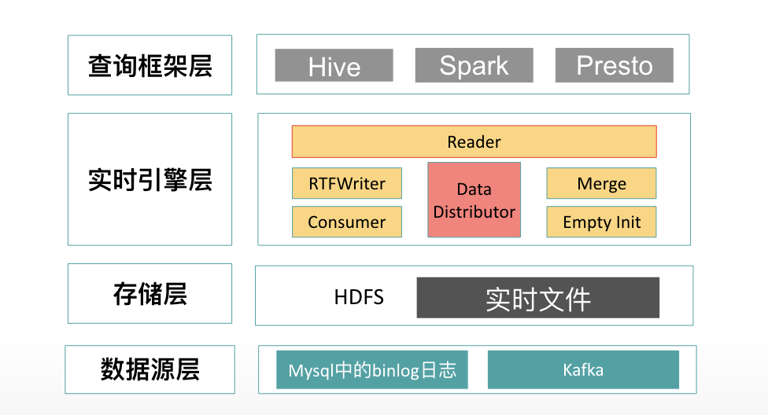

流程及架构¶
工作流程¶

RTF表是一个主要针对于实时数据的存储及查询的技术，而实时数据的来源根本上来讲就是数据库中数据的变化，在这个前提下，我们通过对mysql中的binlog进行解析从而拿到那些变化的数据，解析的操作类型有insert，update和delete。每次解析完成之后，数据都将被封装为特定的数据格式（RtfMessageType）被加入到队列的末尾。而当队列不为空时，队列的头部将会由消费者不断的拉取信息，并交给RTFWriter来执行写入存储单元的操作。RTFWriter作为一个常驻服务，不仅仅起到了write的作用，同时还根据写入消息主键的HashCode将消息对应到各自的存储单元。在写入的同时，RTFWriter会发起TopN合并的操作，将缓冲存储区的消息与主存储区合并。
在进行实时数据查询的时候，RTFReader将根据索引条件去对应的HDFS目录下遍历数据文件，并根据消息的主键来分组并得到最新事件的消息，从而返回最新的数据提供给用户。从而，使用者只通过简单的sql语句就能够快速的获得实时数据。
RTF架构¶

RTF支持的消息源有两种，它们分别为Mysql中的binlog日志及Kafka中的消费数据。在单机版的RTF中，数据源层为直接的binlog日志中数据，当小数据量或者不考虑消费积压时可以直接通过单机方式将数据写入HDFS，适用于个人及测试；但通常来说生产环境下我们需要考虑各种复杂的因素，比如数据的波动和大数据量的写入，这时我们就需要用到Kafka作为处理积压的方案，并且使用更加强大的计算引擎spark做支持。在存储层面我们使用主流的HDFS作为存储系统，这让RTF技术能够更加贴合国内的技术应用，并且RTF的存储模式也使得它更加方便管理和低成本的存储。在实时引擎层则是RTF对于来源数据的一些处理操作，例如消费拉取，数据转换，数据写入，压实操作及空文件初始化等，在数据被RTFWriter处理完成之后，可以由RTFReader来发起读取操作。最终的查询引擎层则支持了hive，presto和spark的查询方式。